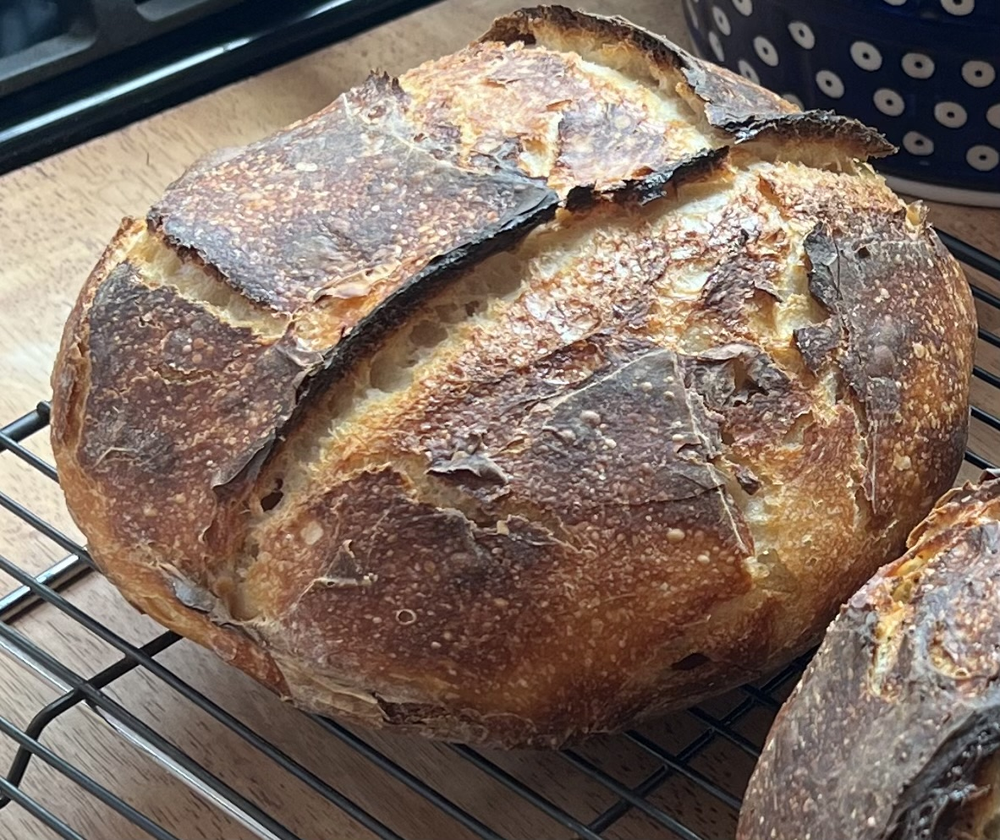

Rustic Artisan Bread Recipe
Welcome to the world of homemade bread baking, where the aroma of freshly baked loaves
fills the air and the warmth of the oven brings comfort to every corner of your kitchen. In
this recipe, we'll guide you through the timeless tradition of crafting rustic artisan bread
- a delightful blend of simplicity and sophistication. With just a handful of ingredients
and a touch of patience, you'll soon be rewarded with a golden-crusted masterpiece,
boasting a soft, airy interior that's perfect for tearing and sharing with loved ones. So
roll up your sleeves, dust off your apron, and let's embark on a journey to create bread
that not only nourishes the body but also feeds the soul.

Ingredients
- 355g filtered warm water (about 85 degrees F)
- 7 g yeast (active dry, instant, or quick rise- 2.25 teaspoons)
- 520 g bread flour if preferred, you may substitute up to 60 g of
the bread flour for wheat and/or rye
- 10 g salt fine grain and non-iodized
Instructions
- Prepare the Dough:
- In a large mixing bowl, combine the flour, salt, and yeast. Stir well to
distribute the ingredients evenly.
- Gradually pour in the lukewarm water while stirring with a wooden spoon or
your hands until a shaggy dough forms.
- Once the dough comes together, cover the bowl with plastic wrap or a clean
kitchen towel and let it rest at room temperature for 12 to 18 hours. During
this time, the dough will ferment and rise.
- Shape the Dough:
- After the resting period, the dough should be noticeably puffy and bubbly.
Gently transfer it onto a lightly floured surface.
- With lightly floured hands, fold the dough over itself a couple of times to
form a rough ball. Don't overwork the dough; it should remain somewhat loose and
rustic.
- Place the dough seam side down on a piece of parchment paper and cover it
loosely with plastic wrap or a towel. Let it rest for another 1 to 2 hours until
it doubles in size.
- Preheat the Dutch Oven:
- About 30 minutes before the dough is ready, preheat your oven to 450°F
(230°C). Place a Dutch oven with its lid on inside the oven as it preheats.
This will allow the Dutch oven to get thoroughly heated.
- Bake the Bread:
- Once the dough has doubled in size and the oven and Dutch oven are
preheated, carefully remove the hot Dutch oven from the oven.
- Using the parchment paper as a sling, carefully transfer the dough into the
hot Dutch oven. Be cautious as the Dutch oven and lid will be very hot.
- Put the lid back on the Dutch oven and place it back into the oven. Bake
covered for 30 minutes.
- After 30 minutes, remove the lid from the Dutch oven and continue baking for
an additional 10-15 minutes (until the bread develops a deep golden crust).
- Once baked, carefully remove the bread from the Dutch oven and let it cool
on a wire rack for at least 30 minutes before slicing.
- Enjoy:
- Slice into your freshly baked Dutch oven artisan bread and savor the aroma,
flavor, and texture. Serve with your favorite spreads or enjoy it as is